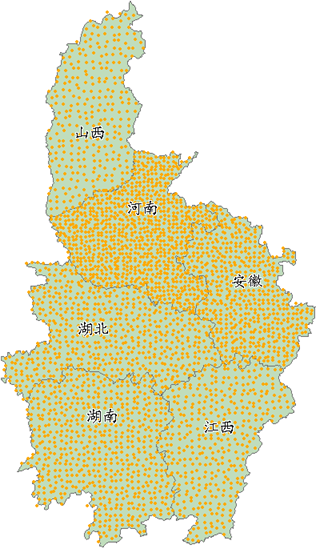

com.supermap.android.theme.Theme
com.supermap.android.theme.ThemeDotDensity
com.supermap.android.theme.Theme
com.supermap.android.theme.ThemeDotDensity
|
|||||||||
| 上一个类 下一个类 | 无框架 | ||||||||
| 摘要： 嵌套 | 字段 | 构造方法 | 方法 | 详细信息： 字段 | 构造方法 | 方法 | ||||||||
java.lang.Object
public class ThemeDotDensity
点密度专题图。
点密度专题图使用点的个数或密集程度来反映一个区域或范围某一专题数据的值，因此只有面数据才能制作点密度专题图。
点密度专题图的一个点代表了一定数值，则一个区域内点的个数乘以一个点所表示的数值就是此区域对应的专题数据的值。例如指定一个点代表1000，则若一个区域的人口为1000000，则该区域点的个数为1000个。影响点密度专题图显示风格和效果的参数主要是：点代表的值和点风格。
如下图所示，中部六省地图中，对1990年人口数量使用点密度来表示，设置基准值为10万人（即一个点代表10万人）：

| 字段摘要 | |
|---|---|
java.lang.String |
dotExpression用于创建点密度专题图的字段或字段表达式，字段或字段表达式应为数值型。 |
ServerStyle |
style定义点密度专题图中用于渲染的符号显示样式。 |
double |
value专题图中每一个点所代表的数值，即基准值。 |
| 从类 com.supermap.android.theme.Theme 继承的字段 |
|---|
themeMemoryData, type |
| 构造方法摘要 | |
|---|---|
ThemeDotDensity()构造函数。 |
|
| 方法摘要 |
|---|
| 从类 java.lang.Object 继承的方法 |
|---|
clone, equals, finalize, getClass, hashCode, notify, notifyAll, toString, wait, wait, wait |
| 字段详细信息 |
|---|
public java.lang.String dotExpression
用于创建点密度专题图的字段或字段表达式，字段或字段表达式应为数值型。必设参数。
public ServerStyle style
定义点密度专题图中用于渲染的符号显示样式。
public double value
专题图中每一个点所代表的数值，即基准值。单位同dotExpression属性，默认为200。
| 构造方法详细信息 |
|---|
public ThemeDotDensity()
构造函数。
|
|||||||||
| 上一个类 下一个类 | 无框架 | ||||||||
| 摘要： 嵌套 | 字段 | 构造方法 | 方法 | 详细信息： 字段 | 构造方法 | 方法 | ||||||||